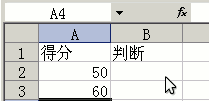
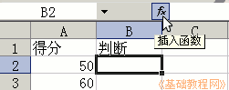
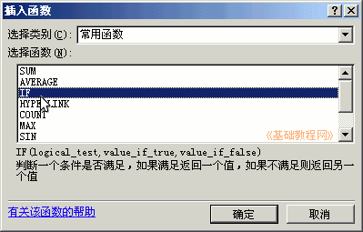
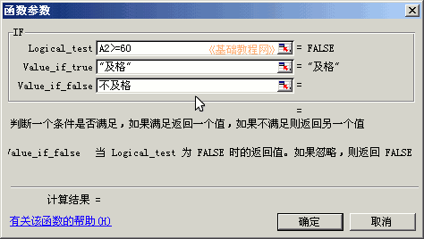
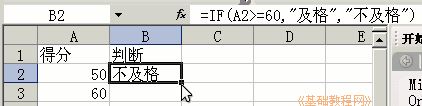
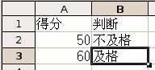

Excel 基础入门教程
IF 判断函数 返回
有时候需要对旁边的单元格进行判断，比如及格还是不及格，折合百分数等等，下面我们来看一个练习；
1、启动Excel
1）点击“开始－所有程序－Microsoft－Microsoft Office Excel 2003”；
2）出现一个满是格子的空白窗口，这就是一张电子表格了，第一个格子看着边框要粗一些，处于选中状态；

2、判断函数
1）在A1和B1输入标题：“得分”和“判断”，在得分下面A2、A3里输入两个成绩，50和60；
2）选中“判断”下面的B2，点编辑栏里的fx，准备输入公式；

3）在出来的函数列表里，选择 IF 函数，点确定按钮；

4）接下来是 IF 函数面板，切换到英文状态，在第一行里输入 A2>=60
A2 是旁边的单元格，拿鼠标点击也行，在第二行输入 及格 ，在第三行输入 不及格；
；
这儿的意思是，如果第一行成立，那么就得到第二行，不成立就得到第三行；
5）点确定回到工作区里，这时候B2里得出的是“不及格”；

6）拖动右下角的填充手柄，得到B3是“及格”；

以“判断”为文件名，保存文件到自己的文件夹；
本节学习了Excel中判断函数的使用方法，如果你成功地完成了练习，请继续学习下一课内容；
本教程由86团学校TeliuTe制作|著作权所有
基础教程网：http://teliute.org/
美丽的校园……
转载和引用本站内容，请保留作者和本站链接。